Long-distance hikes I've completed
I love nature, and I love to walk. Throughout the years, I've been fortunate to complete some amazing multi-month backcountry hikes in some the U.S.' most treasured public lands. Below is just a sampler platter of photos from these epic adventures.
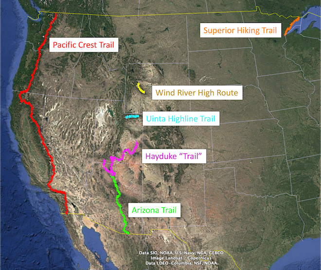
Pacific Crest Trail
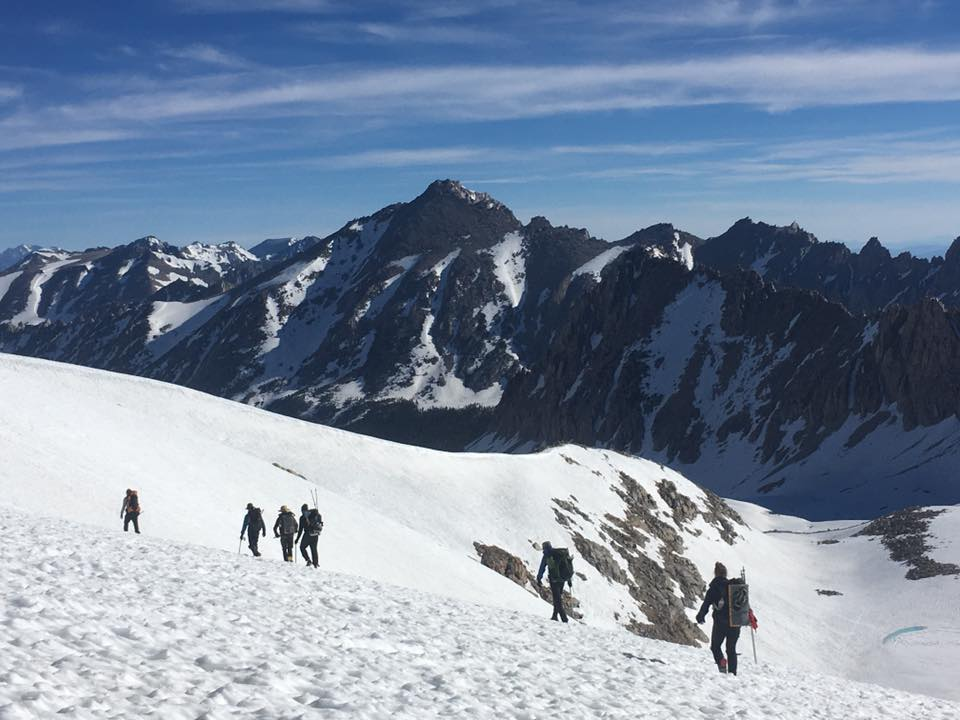
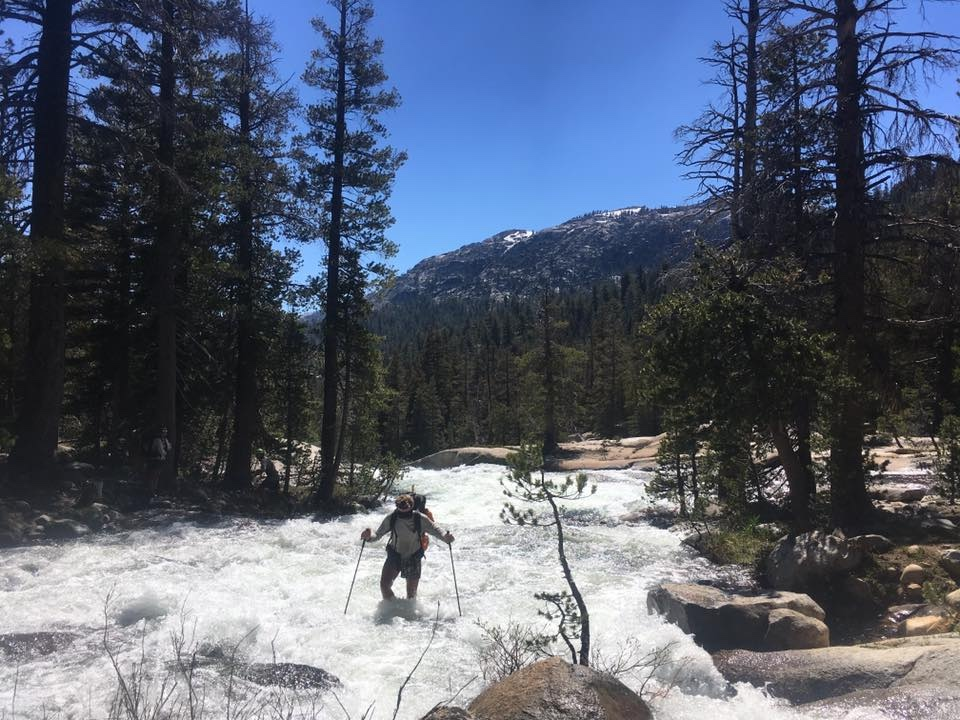
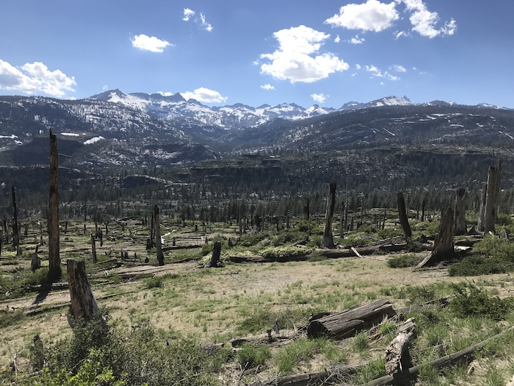
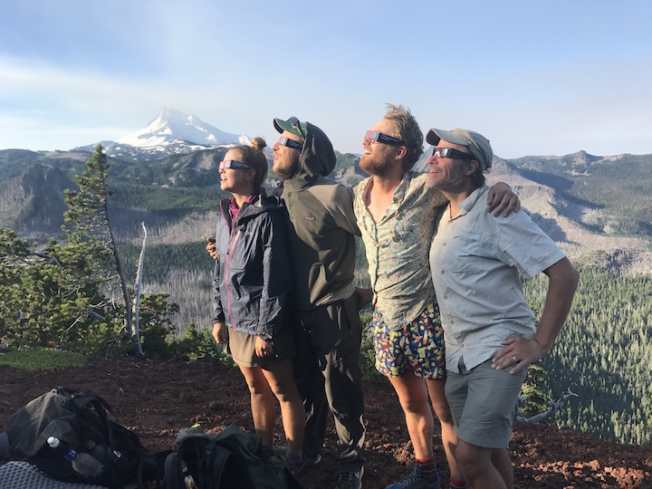
Hayduke Trail
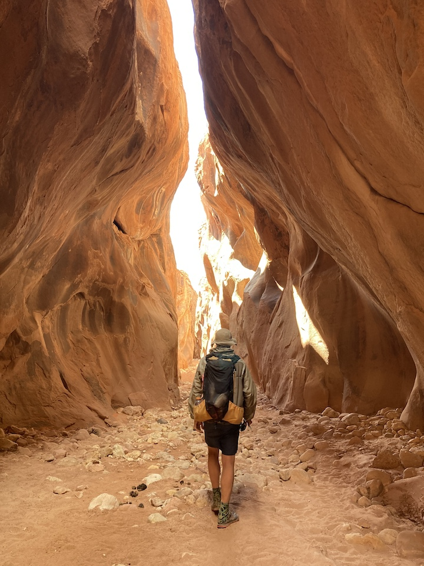
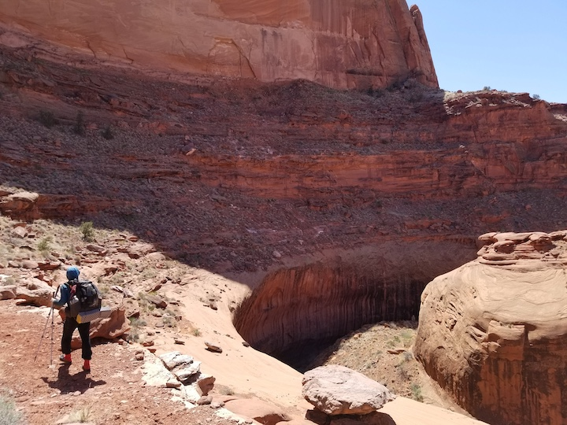
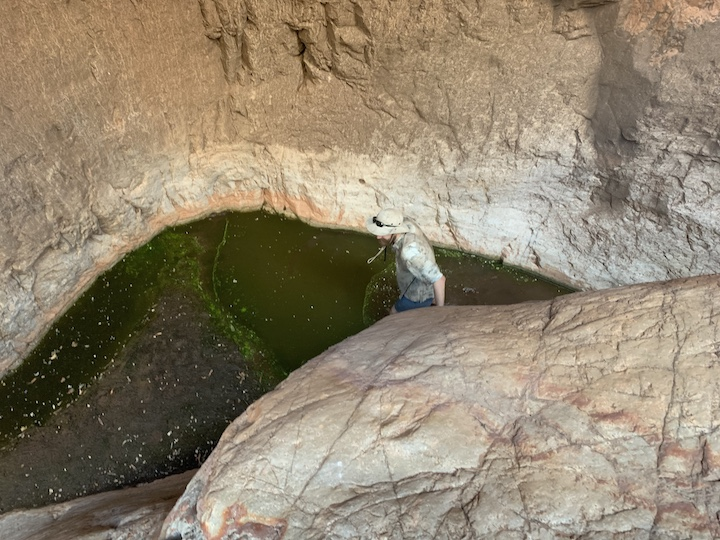
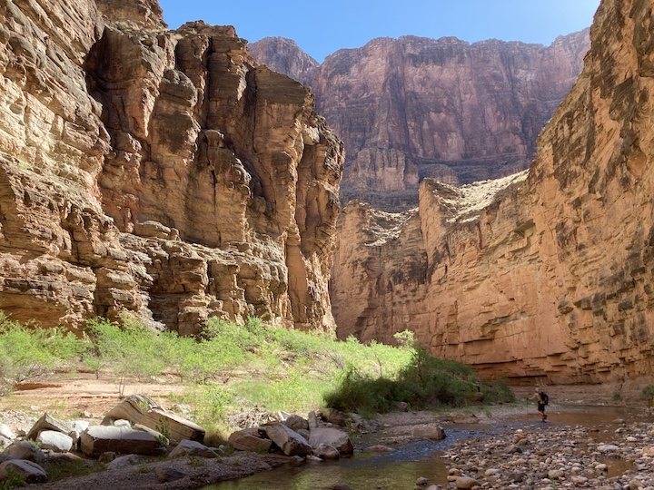
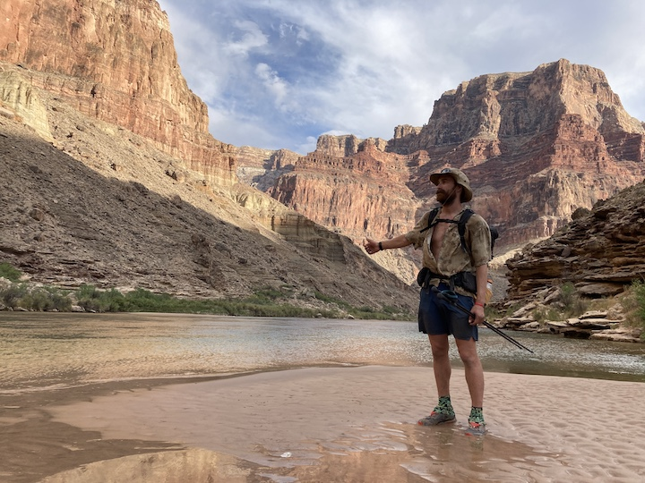
Wind River High Route
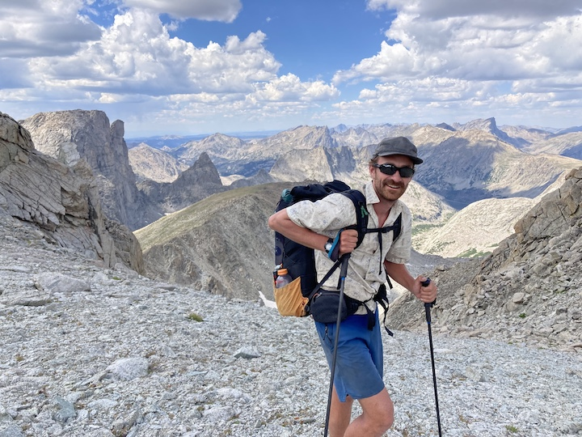
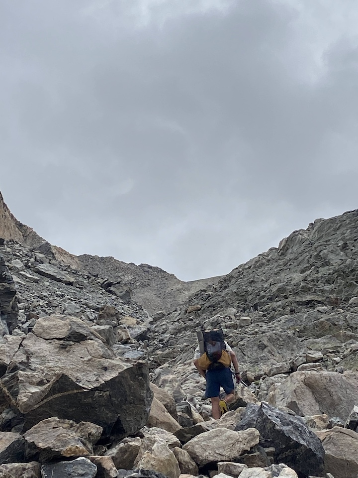
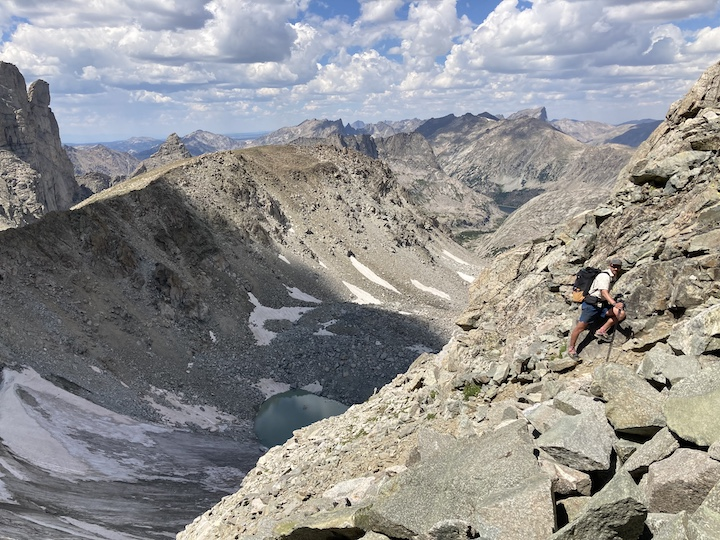